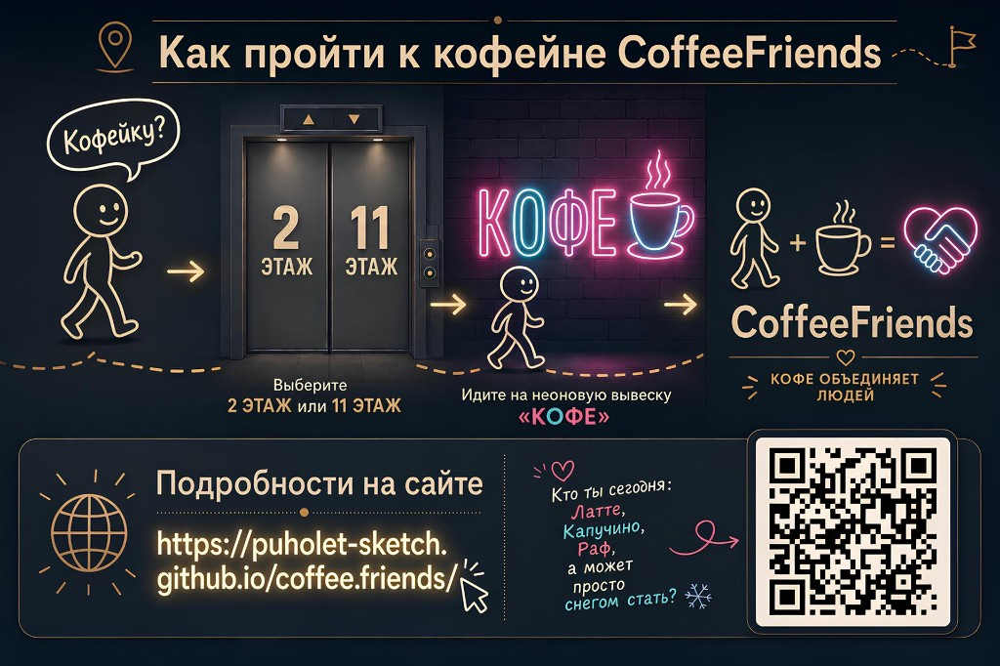

Первыми на месте
Открыли кофе в центре раньше остальных: привычный маршрут от лифта к неону «КОФЕ» на 2 и 11 этажах.
БЦ Китеж · ул. Киевская, 7к2 · Москва
Свежая обжарка, привычный вкус и бариста, который помнит заказ — две точки у лифта, без сюрпризов в чашке.
Неоновая вывеска «КОФЕ» и дружелюбная стойка: навынос или перекус рядом с офисом.
Режим
Точки на 2 и 11 этажах БЦ Китеж.
| пн — чт | 8:00 — 18:00 |
|---|---|
| пт | 8:00 — 17:00 |
| сб, вс | Выходной |
Маршрут
Лифт на 2 или 11 этаж → неоновая вывеска «КОФЕ» → вы у CoffeeFriends.

Меню
Цены ориентировочные — актуальные уточняйте у стойки.
| Иконка | Напиток | Объём / кратко | Цена |
|---|
Ассортимент
Категории и вилки цен — полный перечень в точке и у бариста.
| Иконка | Категория | Кратко | Цена |
|---|
Атмосфера
Связь
Что зашло, чего не хватает в меню, как удобнее для вашего этажа — напишите, разберём по существу.
coffee.friends@yandex.ruВ теме укажите этаж (2 или 11) — так быстрее поймём контекст.
Только про кофе
С мая 2026 по декабрь 2027: на части дней — короткая история или факт. На телефоне нажмите на день с точкой.
Юмор
Про офис, встречи и кофе-брейки — и пару слов со стойки.
Дедлайн горит — а раф ещё держит температуру.
Капучино без пенки — как понедельник без кофе: теоретически возможно.
Латте знает всё о молоке. Вы — о жизни. Договорились?
Эспрессо: мало слов, много смысла — как хороший статус в чате.
Кофе-брейк — единственная встреча, куда все приходят вовремя.
Говорят, баг уходит после кофе. Проверим на втором рафе.
Планёрка в девять — это не «рано». Это когда вчерашний вы ещё не успел допить вчерашний кофе.
Дейлик на пятнадцать минут и кружка на тридцать — оба растут, если не поставить границу.
ИТ-шник без кофе — как код без точки с запятой: где-то обязательно сломается, просто не сразу.
Когда в чате «без перерыва до конца дня», второй кофе заказывают уже с едва заметной улыбкой — почти лечебный ритуал.
Со стойкиЕсли заказ звучит как название эпика в Jira — мы всё равно сделаем раф. Без подзадач.
«Блокер» снимается двумя способами: апдейтом в чате или двойным эспрессо. Логи пока молчат — зато вы уже бодрее.
Планирование спринта без кофе — спорный PR: формально можно, но на ревью вас разнесут.
Кофе на дейлике — единственный легальный фоновый шум, за который с камеры не выключат.
Утренний кофе не делает из вас супергероя — зато объясняет, зачем вы вообще добрались до офиса.
Confluence написан кровью, потом и кофе. В основном кофе.
Со стойкиСложные слова в заказе не обязательны. «Как всегда» — тоже полноценный язык.
Stand-up длится ровно столько, сколько остывает латте. Совпадение? Инвестируем в термостаканы.
Когда в календаре всё цветом — красный, жёлтый, зелёный — у стойки хотя бы один цвет стабилен: корица в капучино.
«Это быстрый вопрос» на слот в пятнадцать минут — классика. «Быстрый раф» — тоже. Один из двух чаще правдивее.
Scrum Master смотрит на burn-down. Бариста — на остаток зёрен. Оба чувствуют конец спринта.
Со стойкиМердж в пятницу вы переживёте сами. Мы лишь обеспечим моральную и молочную поддержку.
ИТ: «У меня всё зависло». Бариста: «Секунду, дожмём шот». Разные контексты — один уровень эмпатии.
Ретро без кофе — это не ретро, это постмортем настроения. Закон офисной физики.
Когда в чате пишут «созвонимся на пять минут», берут не кружку, а кувшин воды. Опыт не спорит с реальностью.
Кофе на планёрке не решает задачи. Но делает терпимым человека, который говорит «давайте синхронизируемся» в третий раз.
Со стойкиЕсли вы объясняете заказ как архитектуру микросервисов — ок. Главное, чтобы в конце было «с сиропом или без».
Демо для заказчика и первая чашка после обеда — одинаковый адреналин. Разница только в том, кто задаёт вопросы.